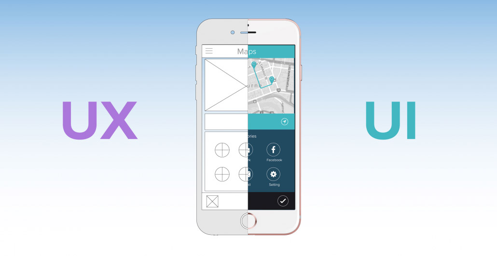
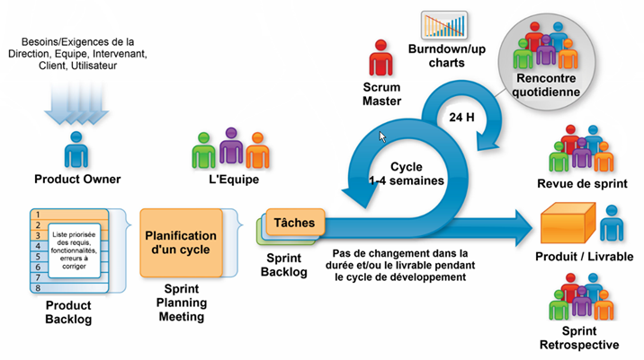
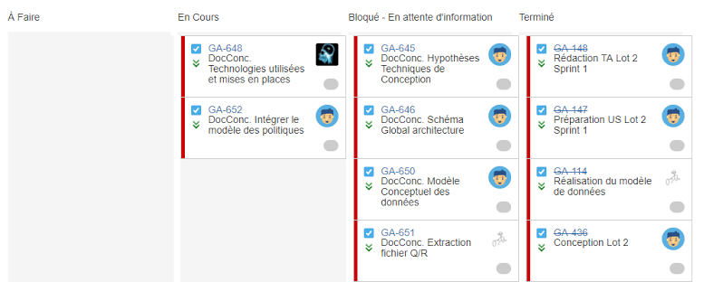
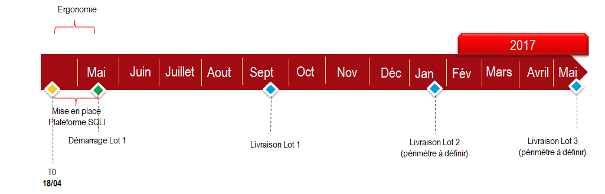
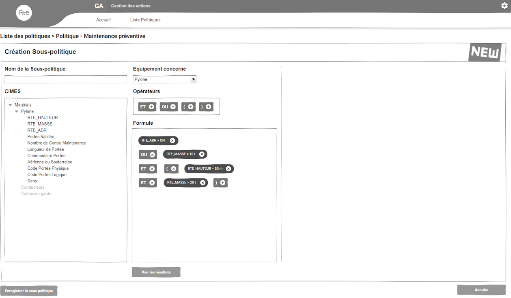
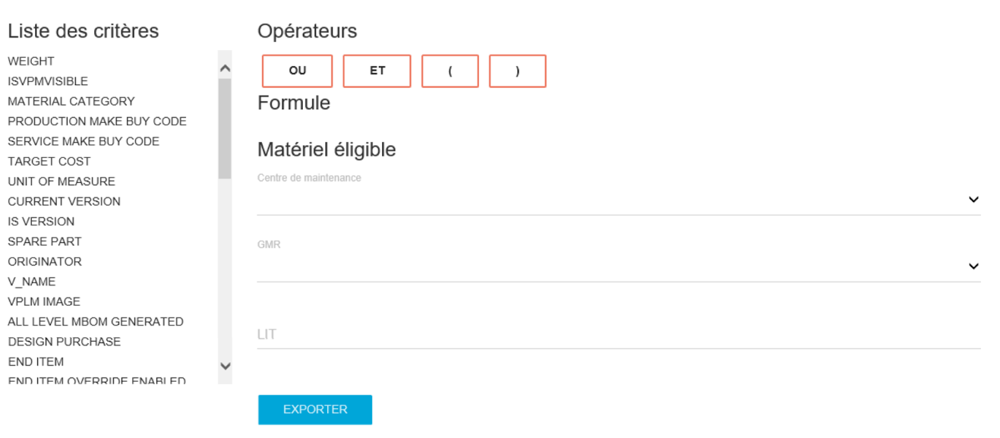

Infoliaison - Gestion des Actifs
Leroy Jimmy - Projet Final d'Entreprise
Formation Responsable en Ingénierie des logiciels
Sommaire
Présentation de SQLI
Le projet Infoliaison-GA
Bilan
SQLI - Présentation
L'entreprise SQLI
ESN : Entreprise de Services Numériques
21 agences en Europe
Plus de 2000 collaborateurs
198 millions d'€ de chiffre d'affaires en 2016
Le Pôle ISC Bordeaux
Centre de Services de 200 collaborateurs
Principaux clients : RTE, La Banque Postale
Développement d'applications Web
Ma place chez SQLI
Le Pôle UX
Cellule Front-End et Design
Intervention en transverse sur les projets
Réalisations UX et UI
UX et UI
Prestations
Définition des Wireframes
Création des maquettes graphiques
Développement Front-End
Mes missions
Fenix : Wireframes
Infoliaison-GA : Wireframes / développement Front
Digital : Maquettes graphiques / développement Front
Infoliaison-GA - Genèse
Client
Entreprise de gestion du réseau électrique en France
Gestion des infrastructures
Pilotage du système électrique
Contexte
Infoligne et Infocable
Gestion des lignes extérieures et souterraines
Applications aujourd'hui obsolètes
Besoin
Capitaliser les données du patrimoine électrique
Réduire les coûts d'exploitation
Modernisation du système d'information
Créer une nouvelle application plus adaptée
Infoliaison : l'ensemble
Infoliaison Patrimoine
Infoliaison-GA (Gestion des Actifs)
Infoliaison-GDI (Gestion des Interventions)
Infoliaison-MOBILITE
Objets métiers
Politiques
Gisements
Opérations
Cadrage
Méthode Agile
Approche fondée sur le "produit" et non le "projet"
Plus souple que le Cycle en V
Implication du client dans le processus de développement
SCRUM
User Stories
"En tant que pilote national
Je veux consulter le détail d'une sous-politique
Afin d'avoir des renseignements sur celle-ci"
Tableau Kanban
Réalisation technique
Framework V5
Framework d'entreprise pour RTE


Planning
4 sprints pour le premier lot
Ma mission
Chiffrage
47 jours d'intervention
Ergonomie : dépassement
Développement Front-End : marge
Ergonomie
Définition des scénarios utilisateur
Etude de l'architecture des informations
Création de wireframes dynamiques
Exemple de Wireframe
Développement Front-End
Bilan du Projet
Livraison du lot 1
Livraison sans bugs majeurs
Respect du chiffrage et des délais
Wireframes validés avec le client
Pérennité du projet
Projet mis en pause
Besoin du client incertain
Déploiement d'une équipe SQLI Paris chez RTE
Bilan personnel
Missions effectuées
Définition de l'ergonomie d'une application
Validation des écrans avec le client
Développement Front-End en équipe
Axes d'amélioration
Evaluation du chiffrage
Bagage technique
Communication avec l'équipe
Bilan de l'alternance et de la formation RIL
Découverte de l'entreprise
Progrès sur les plans techniques et relationnels
Pédagogie par projet
Perspectives
Améliorer mes compétences techniques
Continuer l'alternance via la formation MSI
M'orienter vers la gestion de projet